Physical Intelligence
Kevin Black、Noah Brown、Danny Driess、Adnan Esmail、Michael Equi、Chelsea Finn、Niccolo Fusai、Lachy Groom、Karol Hausman、Brian Ichter、Szymon Jakubczak、Tim Jones、Liyiming Ke、Sergey Levine、Adrian Li-Bell、Mohith Mothukuri、Suraj Nair、Karl Pertsch、Lucy Xiaoyang Shi、James Tanner、Quan Vuong、Anna Walling、Haohuan Wang、Ury Zhilinsky
https://physicalintelligence.company/blog/pi0
arXiv:2410.24164v4 [cs.LG]、2026年1月8日
翻訳について：原文 PDF は
63_pi0_2410.24164.pdf（全 17 ページ）。本文、図の説明、図中ラベル、表、脚注、付録を訳出し、論文タイトルと参考文献は原文のまま掲載。図は原図を掲載し、英語ラベルの日本語訳を併記した。数式・数値・引用番号・コードの識別子は原文を維持。原文の記述に関する補足は「訳注」と明示し、本文と区別している。
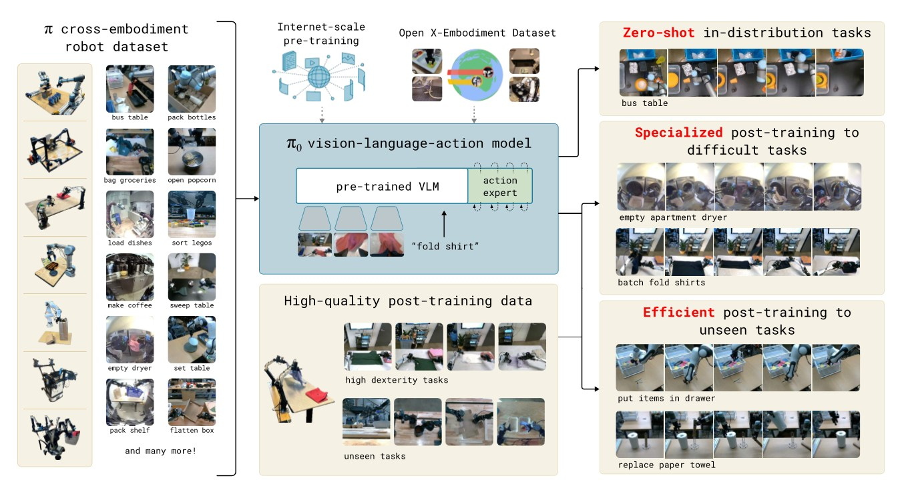
図1：我々の汎用ロボット方策は、事前学習済みの視覚言語モデル（VLM）バックボーンと、多様な器用操作タスクを含む多様なクロスエンボディメント（異なるロボット身体形態にまたがる）データセットを用いる。このモデルは、フローマッチングによって連続的な行動を生成する独立した行動エキスパート（action expert）を追加することでロボット制御に適応させられ、精密かつ滑らかな操作スキルを実現する。このモデルはその後、プロンプトに基づいてタスクを実行するためにそのまま使うことも、高品質なデータでファインチューニングして、複数の衣類を畳む、箱を組み立てるといった複雑な多段階タスクを可能にすることもできる。
図中ラベル：π cross-embodiment robot dataset＝π クロスエンボディメント・ロボットデータセット、bus table＝テーブルの片付け、pack bottles＝ボトルの梱包、bag groceries＝食料品の袋詰め、open popcorn＝ポップコーンを開ける、load dishes＝食器を入れる、sort legos＝レゴの仕分け、make coffee＝コーヒーを淹れる、sweep table＝テーブルを掃く、empty dryer＝乾燥機から取り出す、set table＝テーブルセッティング、pack shelf＝棚に詰める、flatten box＝箱を平らにする、and many more!＝ほか多数、Internet-scale pre-training＝インターネット規模の事前学習、Open X-Embodiment Dataset＝Open X-Embodiment データセット、π0 vision-language-action model＝π0 視覚・言語・行動モデル、pre-trained VLM＝事前学習済み VLM、action expert＝行動エキスパート、“fold shirt”＝「シャツを畳む」、High-quality post-training data＝高品質な事後学習データ、high dexterity tasks＝高い器用さを要するタスク、unseen tasks＝未知のタスク、Zero-shot in-distribution tasks＝分布内タスクへのゼロショット適用、Specialized post-training to difficult tasks＝難しいタスクへの特化した事後学習、empty apartment dryer＝アパートの乾燥機から取り出す、batch fold shirts＝シャツをまとめて畳む、Efficient post-training to unseen tasks＝未知タスクへの効率的な事後学習、put items in drawer＝物を引き出しに入れる、replace paper towel＝ペーパータオルの交換
ロボット学習は、柔軟で汎用的かつ器用なロボットシステムの潜在能力を最大限に引き出すとともに、人工知能における最も根源的な問いのいくつかに取り組むうえで、非常に大きな可能性を秘めている。しかし、実世界で有効なシステムに必要な水準の汎用性にまでロボット学習を引き上げるには、データ、汎化、頑健性の面で大きな障害がある。本論文では、汎用ロボット方策（すなわちロボット基盤モデル）がこれらの課題にどのように対処しうるか、そして複雑で高度に器用なタスクのための有効な汎用ロボット方策をどのように設計できるかを論じる。我々は、インターネット規模の意味的知識を継承するために、事前学習済みの視覚言語モデル（VLM）の上に構築した新しいフローマッチング・アーキテクチャを提案する。次に、単腕ロボット、双腕ロボット、移動マニピュレータを含む複数の器用なロボットプラットフォームから得た大規模かつ多様なデータセットで、このモデルをどのように学習できるかを論じる。我々のモデルを、直接プロンプトによってタスクを実行する能力、人間および高レベル VLM 方策からの言語指示に従う能力、そしてファインチューニングによって新しいスキルを獲得する能力の観点から評価する。結果は、洗濯物の畳み、テーブルの片付け、箱の組み立てなど、多岐にわたるタスクを網羅している。
Physical Intelligence、San Francisco, California, USA。連絡先：
research@physicalintelligence.company
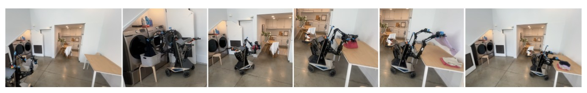
図2：π0 が移動マニピュレータを制御して洗濯物を畳む。我々のモデルは、7 種類の異なるロボット構成と 68 のタスクから得た多様なデータで事前学習されており、その後、直接プロンプトで指示することも、複雑な下流タスクに向けてファインチューニングすることもできる。この洗濯物畳み方策はその例であり、乾燥機から洗濯物を取り出し、それを洗濯かごに詰め、かごを畳み台まで運び、その後各衣類を畳む。
（訳注：原文の章冒頭には Robert A. Heinlein の小説 Time Enough for Love からのエピグラフが置かれている。人間は、おむつを替える、侵攻作戦を立てる、船を操る、建物を設計する、ソネットを書く、骨を接ぐ、方程式を解く、コンピュータをプログラムする、料理をするなど、ありとあらゆることをこなせるべきだと列挙し、「Specialization is for insects.（専門化は昆虫のためのものだ）」と結ぶ一節である。著作権のある文学作品からの引用のため、ここでは全文の転載・逐語訳を避けて要旨のみを示した。）
人工知能システムには、あらゆる形態と規模のものがある。タンパク質の立体構造の予測［21］のように人間の頭脳では到達できない複雑な問題を解く高度に特化したシステムから、テキストのプロンプトに基づいて本物そっくりの高解像度画像や動画を生成できるシステム［40］までさまざまである。しかし、人間の知能が機械の知能を最も大きく上回っている軸は汎用性（versatility）である。すなわち、多様な物理環境に置かれた多様なタスクを解き、環境の制約、言語による命令、予期しない外乱に知的に応答する能力である。AI においてこの種の汎用性に向けた最も具体的な進歩は、おそらく大規模言語モデルおよび視覚言語モデル［1, 48］に見られる。これらは、Web 上の大規模かつ非常に多様な画像とテキストのコーパスで事前学習され、その後、望ましい振る舞いと応答のパターンを引き出すことを目的として、より慎重にキュレーションされたデータセットを用いてファインチューニング（「アラインメント」）されるシステムである。こうしたモデルは幅広い指示追従能力と問題解決能力を示すことが分かっているが［53, 27］、人間のように物理世界の中に真に位置づけられて（situated）いるわけではなく、物理的相互作用についての理解は完全に抽象的な記述に基づいている。こうした手法が、人間が持つような物理的に位置づけられた汎用性を示す AI システムに向けて具体的な進歩を遂げるためには、物理的に位置づけられたデータ、すなわち身体性を持つロボットエージェントから得たデータでそれらを学習させる必要があるだろう。
多様なロボット行動を実行するよう指示できる柔軟で汎用的なモデルは、実用上きわめて大きな意味を持つが、それだけでなく、データの入手可能性、汎化、頑健性など、今日のロボット学習が直面している最も困難な課題のいくつかに対する解決策をもたらす可能性もある。自然言語［1］やコンピュータビジョン［39］では、多様なマルチタスクデータで事前学習された汎用の基盤モデルは、狭く調整された特化型の解法を上回る傾向がある。たとえば、写真中の鳥を認識することが目的であれば、鳥の認識データのみで学習するよりも、多種多様な画像と言語の対応関係で事前学習してから、鳥の認識タスクに向けてファインチューニングするかプロンプトで指示する方が、おそらく手っ取り早い。同様に、有効な特化型ロボットシステムを得るためにも、まず高度に多様なロボットデータで事前学習し、その後目的のタスクに向けてファインチューニングするかプロンプトで指示する方が効果的であると分かるかもしれない。これはデータ不足の課題を解決しうる。というのも、汎用モデルには、他のタスク、他のロボット、さらにはロボット以外の情報源からのデータを含め、はるかに多くのデータ源が利用可能だからである。また、頑健性と汎化の課題も解決しうる。多様なデータは観測と行動をより広くカバーしており、より狭い特化型データには含まれていないかもしれない多様な場面、修正、回復行動を提供するからである。したがって、ロボット学習に大規模事前学習のアプローチを採用することは、この分野の課題の多くに対処し、学習によって実現される実用的なロボットを現実のものとする可能性を持つと同時に、人工知能における最も根源的な問題についての我々の理解を深める可能性も持つ。
しかし、このような汎用ロボット方策、すなわちロボット基盤モデルを開発するには、いくつかの大きな課題がある。第一に、こうした研究はいずれも非常に大きな規模で行わなければならない。大規模事前学習の恩恵は、より小さな規模ではしばしば十分に現れないからである［54］。第二に、多様なデータ源を効果的に活用でき、同時に複雑な物理的場面と相互作用するのに必要な入り組んだ微妙な振る舞いを表現できる、適切なモデルアーキテクチャを開発する必要がある。第三に、適切な学習のレシピが必要である。これはおそらく最も重要な要素である。NLP やコンピュータビジョンにおける大規模モデルの最近の進歩の多くは、事前学習データと事後学習データをキュレーションするための繊細な戦略に大きく依存してきたからである［35］。
本論文では、これら 3 つのボトルネックのそれぞれにどのように取り組めるかを示す、π0 と呼ぶプロトタイプのモデルと学習フレームワークを提示する。我々のモデルとシステムを図1に示す。多様なデータ源を取り込むために、まず事前学習済みの視覚言語モデル（VLM）を利用してインターネット規模の経験を取り入れる。モデルを VLM に基づかせることで、言語モデルや視覚言語モデルが持つ一般知識、意味的推論、問題解決能力を継承する。次に、ロボットの行動を取り込むようにモデルをさらに学習させ、視覚・言語・行動（VLA）モデル［7］へと変える。多種多様なロボットデータ源を活用できるようにするため、多くの種類のロボットからのデータを同一のモデルに統合するクロスエンボディメント学習（cross-embodiment training）［10］を用いる。これらの異なる種類のロボットは、単腕・双腕システムや移動マニピュレータを含め、異なるコンフィギュレーション空間と行動表現を持つ。さらに、高度に器用で入り組んだ物理的タスクを実行できるようにするため、フローマッチング（拡散モデルの一変種）を備えた行動チャンキング（action chunking）アーキテクチャ［57］を用いて、複雑な連続行動分布を表現する［28, 32］。これにより、我々のモデルは洗濯物畳み（図1参照）のような器用なタスクにおいて、最大 50 Hz の周波数でロボットを制御できる。フローマッチングを VLM と組み合わせるために、標準的な VLM にフローに基づく出力を追加する新しい行動エキスパートを用いる。
言語モデルと同様に、我々のモデルのアーキテクチャは手法の一部にすぎない。複雑なタスクを柔軟かつ頑健に実行するためには、適切な学習レシピが必要である。我々のレシピは、エクサスケールの言語モデルや画像言語モデル［1, 48］で一般的に見られる事前学習と事後学習の分離を踏襲している。すなわち、モデルをまず非常に大規模で多様なコーパスで事前学習し、次に、望ましい振る舞いのパターン（我々の場合は器用さ、効率性、頑健性）を引き出すために、より狭く、より慎重にキュレーションされたデータでファインチューニングする。直観的には、高品質なデータのみで学習すると、モデルは失敗から回復する方法を学べない。そのようなデータには失敗がめったに現れないからである。一方、より低品質な事前学習データのみで学習すると、モデルは効率的かつ頑健に行動することを学べない。両者を組み合わせることで望ましい振る舞いが得られる。すなわち、モデルは可能な限り高品質データに近い形で行動しようとしつつ、失敗した場合に繰り出せる回復と修正のレパートリーも保持する。
本研究の貢献は、VLM の事前学習とフローマッチングに基づく新しい汎用ロボット方策アーキテクチャと、そのようなロボット基盤モデルのための事前学習／事後学習レシピの実証的な調査である。我々のモデルを、言語命令によってそのまま（out of the box）用いる場合、下流タスクへのファインチューニングを行う場合、そして複雑で時間的に長いタスクを実行するために中間的な言語命令を出力する高レベルの意味的方策と組み合わせる場合について評価する。我々のモデルとシステムは近年の研究で提示されたさまざまなアイデアを利用しているが、その構成要素の組み合わせは新しく、実証的評価は、これまでに示されたロボット基盤モデルを大きく上回る水準の器用さと汎用性を示している。我々は、10,000 時間を超えるロボットデータで事前学習し、洗濯物畳み（図2参照）、テーブルの片付け、電子レンジへの食器の出し入れ、卵をパックに並べる、箱の組み立て、食料品の袋詰めなど、さまざまな器用なタスクへファインチューニングすることで、我々のアプローチを評価する。
本研究は、大規模ロボット学習およびマルチモーダル言語モデルにおいて最近提案された手法に基づいている。本研究に最も密接に関係するのは、最近提案された視覚・言語・行動（VLA）モデルであり、これはロボット制御のためにファインチューニングされた事前学習済み VLM を用いるものである［7, 24, 55］。こうしたモデルは、自己回帰的な離散化を用いて、テキストトークンと類似した形で行動を表現する。これに対し、我々のモデルは、拡散モデル［20, 46］の一変種であるフローマッチング［32, 28］によって行動を生成するよう VLM をファインチューニングする新しい設計を採用している。これにより、高周波数の行動チャンク［57］（最大 50 Hz）と、高度に器用なタスクを扱うことが可能になる。我々が示すように、後者は従来の自己回帰型 VLA［7］にとって大きな課題となる。これは、行動生成のための拡散モデルに関する最近のいくつかの研究［9, 60］に似ている。これらの研究とは対照的に、我々のモデルは事前学習済みの VLM バックボーン［5］を用いる。また我々の貢献は本質的に統合的なものであり、モデルアーキテクチャそのものだけでなく、事前学習レシピ、事前学習と事後学習の段階、そして一連の実世界実験を含む、ロボット基盤モデルのためのフレームワークに焦点を当てている。
ロボット制御以外では、事前学習済み言語モデルと拡散モデルを組み合わせた多くのモデルが提案されており［40, 41, 14］、その中には拡散モデルと自己回帰型大規模言語モデルを明示的にハイブリッド化したモデルも含まれる［19, 29, 59］。こうしたモデルは通常、画像生成を対象としているが、我々の行動生成モデルは、以前に提案されたいくつかの概念に基づいている。Zhou ら［59］と同様に、我々は、デコーダのみのトランスフォーマーで標準的なクロスエントロピー損失の代わりに、個々の系列要素に適用される拡散型（フローマッチング）の損失によってモデルを学習する。Liu ら［29］と同様に、拡散に対応するトークンには別個の重みの集合を用いる。これらの概念を VLA モデルに取り入れることで、我々の知る限り、器用な制御のための高周波数の行動チャンクを生成する初めてのフローマッチング VLA を導入する。
本研究はまた、大規模ロボット学習に関する豊富な先行研究の歴史にも基づいている。この分野の初期の研究はしばしば自己教師ありの、あるいは自律的なデータ収集を利用しており［26, 22, 8］、把持［18, 37］や押し動作［56］のような単純なタスクについては扱いやすいデータ源を提供したが、より器用な振る舞いの複雑さは備えていなかった。より最近では、幅広い汎化を可能にするロボット制御用の高品質なデータセットが数多く収集されているが［23, 10, 52, 33, 34, 43, 13, 6］、それらは通常、物体の移動や初歩的な家具の操作（例：引き出しを開ける）からなるより単純なタスクのためのものである［31, 15］。より器用なタスクはより小さな規模で研究されてきており、通常は数十から数百の学習軌道［57］、時間にして 10 時間以下に相当する。我々の目的の一つは複雑で器用な振る舞いを研究することであるため、オープンソースの OXE データセット［10］で補完した、約 10,000 時間のデモンストレーションからなるはるかに大きなデータセットを用いる。我々の知る限り、これはロボットデータの量という点で、群を抜いて最大のロボット学習実験である。この規模において、より洗練された事前学習／事後学習レシピが非常に効果的であることを示す。大規模言語モデルで用いられるレシピと同様に、事前学習段階はモデルに幅広い知識の基盤を与え、それが事後学習段階でより高品質なキュレーション済みデータによって洗練され、望ましい振る舞いが達成される。
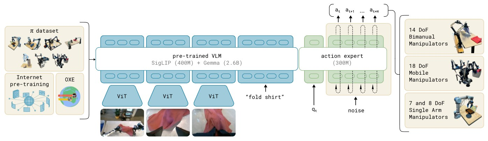
図3：我々のフレームワークの概要。まず、我々独自の器用操作データセットとオープンソースデータの両方からなる事前学習用の混合データから始める。この混合データを用いて、より大きな VLM バックボーンと、ロボットの状態と行動を処理するためのより小さな行動エキスパートからなるフローマッチング VLA モデルを学習する。VLM バックボーンの重みは PaliGemma［5］から初期化され、大規模なインターネット事前学習で学習された表現を提供する。得られた π0 モデルは、異なる行動空間を持つ複数のロボット身体形態を制御して、多種多様なタスクを達成するために用いることができる。
図中ラベル：π dataset＝π データセット、Internet pre-training＝インターネット事前学習、pre-trained VLM＝事前学習済み VLM、action expert＝行動エキスパート、“fold shirt”＝「シャツを畳む」、noise＝ノイズ、14 DoF Bimanual Manipulators＝14 自由度の双腕マニピュレータ、18 DoF Mobile Manipulators＝18 自由度の移動マニピュレータ、7 and 8 DoF Single Arm Manipulators＝7 および 8 自由度の単腕マニピュレータ
我々が示すタスクの複雑さは、先行研究を大きく上回っている。最近の研究では、靴紐を結ぶ［58］やエビを調理する［17］といった、より複雑で器用な振る舞いがいくつか示されているが、我々は、物理的な器用さと組合せ的な複雑さの両方を兼ね備えた振る舞いについて、ときに数十分にも及ぶ非常に長いタスクを我々のフレームワークで学習できることを示す。たとえば、我々の洗濯物畳みタスクでは、ロボットは任意の状態から始まりうるさまざまな衣類を操作し、複数の衣類を順に畳む必要がある。テーブル片付けタスクでは、未知の物体のクラス（ゴミか食器か）を見分ける必要がある。単一のクロスエンボディメント・モデルをこれらのタスクのベースモデルとして使用できることを示す。我々の知る限り、本研究はエンドツーエンドのロボット学習の文献において最も長い器用なタスクを実証している。
我々のモデルと学習手順の概略を図3に示す。我々の学習フレームワークでは、まず、7 種類の異なるロボット構成で 68 の異なるタスクについて収集した我々独自の器用操作データセット（V-C 節）と、22 台のロボットのデータを含む OXE データセット［10］全体とを重み付きで組み合わせた、事前学習用の混合データを構成する。事前学習段階（V-A 節）では、タスク名とセグメント注釈（典型的には約 2 秒の長さの部分軌道に対するきめ細かいラベル）を組み合わせた多様な言語ラベルも用いる。事前学習段階の目的は、幅広い能力と汎化を示すが、どれか一つのタスクで高い性能を出すことに特化しているとは限らないベースモデルを学習することである。このベースモデルは言語命令に従い、さまざまなタスクを初歩的な習熟度で実行できる。複雑で器用なタスクについては、次に事後学習の手順（V-A 節）を用いる。これは高品質なキュレーション済みデータを使ってモデルを特定の下流タスクに適応させるものである。少量から中程度の量のデータによる効率的な事後学習と、洗濯物畳みや移動マニピュレーションのような複雑なタスクのためのより大きなデータセットによる高品質な事後学習の両方を検討する。
IV 節で説明する我々のモデルは、PaliGemma 視覚言語モデル［5］に基づいており、これを我々の混合データでさらに学習する。ベースの PaliGemma VLM を π0 に変えるために、フローマッチング［32, 28］を用いて連続的な行動分布を生成する行動出力を追加する。この設計については次節で詳しく説明する。なお、我々が PaliGemma を用いるのは利便性と比較的小さなサイズ（リアルタイム制御に有用である）のためであり、我々のフレームワークは任意の事前学習済みベース VLM と互換性がある。
図3に示す π0 モデルは、主として言語モデルのトランスフォーマー・バックボーンから構成される。標準的な後期融合（late fusion）型 VLM のレシピ［3, 11, 30］に従い、画像エンコーダがロボットの画像観測を言語トークンと同じ埋め込み空間に埋め込む。我々はさらに、このバックボーンにロボット特有の入力と出力、すなわち固有受容状態（proprioceptive state）とロボットの行動を追加する。π0 は条件付きフローマッチング［28, 32］を用いて行動の連続分布をモデル化する。フローマッチングは、我々のモデルに高い精度と多峰的な分布をモデル化する能力を与え、高周波数の器用なタスクに特に適したものにする。我々のアーキテクチャは Transfusion［59］に着想を得ている。Transfusion は、連続的な出力に対応するトークン1をフローマッチング損失で教師し、離散的な出力に対応するトークンをクロスエントロピー損失で教師するという、複数の目的関数を用いて単一のトランスフォーマーを学習する。Transfusion を発展させ、我々はさらに、ロボット特有の（行動と状態の）トークンに別個の重みの集合を用いると性能が向上することを見いだした。この設計は 2 つの混合要素を持つ混合エキスパート（mixture of experts）［45, 25, 12, 16］に類似しており、第 1 の要素は画像とテキストの入力に、第 2 の要素はロボット特有の入力と出力に用いられる。この第 2 の重みの集合を行動エキスパートと呼ぶ。
脚注1：本論文では、「トークン」という語を、系列次元に沿った入力／出力のスロットを指すものとして用いる。そのスロットが離散変数（例：言語トークン）に対応するか、連続変数（例：画像パッチやロボットの行動）に対応するかは問わない。
形式的には、データ分布 \( p(\mathbf{A}_t|\mathbf{o}_t) \) をモデル化したい。ここで \( \mathbf{A}_t = [\mathbf{a}_t, \mathbf{a}_{t+1}, ..., \mathbf{a}_{t+H-1}] \) は将来の行動の行動チャンクに対応し（我々のタスクでは \( H = 50 \) を用いる）、\( \mathbf{o}_t \) は観測である。観測は複数の RGB 画像、言語命令、およびロボットの固有受容状態からなり、\( \mathbf{o}_t = [\mathbf{I}^1_t, ..., \mathbf{I}^n_t, \ell_t, \mathbf{q}_t] \) である。ここで \( \mathbf{I}^i_t \) は \( i \) 番目の画像（ロボットあたり 2 枚または 3 枚）、\( \ell_t \) は言語トークンの系列、\( \mathbf{q}_t \) は関節角度のベクトルである。画像 \( \mathbf{I}^i_t \) と状態 \( \mathbf{q}_t \) は対応するエンコーダで符号化され、その後、線形射影層によって言語トークンと同じ埋め込み空間に射影される。
行動チャンク \( \mathbf{A}_t \) 内の各行動 \( \mathbf{a}_{t'} \) には、対応する行動トークンがあり、これを行動エキスパートに通す。学習時には、これらの行動トークンを条件付きフローマッチング損失［28, 32］で教師する。
\[ L^\tau(\theta) = \mathbb{E}_{p(\mathbf{A}_t|\mathbf{o}_t), q(\mathbf{A}^\tau_t|\mathbf{A}_t)} ||\mathbf{v}_\theta(\mathbf{A}^\tau_t, \mathbf{o}_t) - \mathbf{u}(\mathbf{A}^\tau_t|\mathbf{A}_t)||^2, \]
ここで、下付き添え字はロボットのタイムステップを、上付き添え字はフローマッチングのタイムステップを表し、\( \tau \in [0, 1] \) である。高解像度の画像［14］や動画［38］の生成に関する最近の研究では、フローマッチングを単純な線形ガウス（あるいは最適輸送）確率パス［28］\( q(\mathbf{A}^\tau_t|\mathbf{A}_t) = \mathcal{N}(\tau\mathbf{A}_t, (1-\tau)\mathbf{I}) \) と組み合わせると、実験的に高い性能が得られることが示されている。実際には、ランダムなノイズ \( \epsilon \sim \mathcal{N}(\mathbf{0}, \mathbf{I}) \) をサンプリングし、「ノイズ付き行動」\( \mathbf{A}^\tau_t = \tau\mathbf{A}_t + (1-\tau)\epsilon \) を計算し、ネットワーク出力 \( \mathbf{v}_\theta(\mathbf{A}^\tau_t, \mathbf{o}_t) \) がノイズ除去ベクトル場 \( \mathbf{u}(\mathbf{A}^\tau_t|\mathbf{A}_t) = \mathbf{A}_t - \epsilon \) に一致するように学習することで、ネットワークを訓練する。行動エキスパートは完全な双方向の注意マスクを用いるため、すべての行動トークンは互いに注意を向ける。学習時には、フローマッチングのタイムステップ \( \tau \) を、より小さい（よりノイズの多い）タイムステップを重視するベータ分布からサンプリングする。詳細は付録 B を参照されたい。
推論時には、ランダムなノイズ \( \mathbf{A}^0_t \sim \mathcal{N}(\mathbf{0}, \mathbf{I}) \) から出発し、学習したベクトル場を \( \tau = 0 \) から \( \tau = 1 \) まで積分することで行動を生成する。前進オイラー法の積分則を用いる。
\[ \mathbf{A}^{\tau+\delta}_t = \mathbf{A}^\tau_t + \delta\mathbf{v}_\theta(\mathbf{A}^\tau_t, \mathbf{o}_t), \]
ここで \( \delta \) は積分のステップ幅である。実験では 10 回の積分ステップ（\( \delta = 0.1 \) に相当）を用いる。なお、プレフィックス \( \mathbf{o}_t \) に対する注意のキーとバリューをキャッシュし、各積分ステップでは行動トークンに対応するサフィックスのみを再計算することで、推論を効率的に実装できる。モデルの各部分の推論時間を含む推論手順の詳細は付録 D に示す。
原理的には、我々のモデルはスクラッチから初期化することも、任意の VLM バックボーンからファインチューニングすることもできるが、実際には PaliGemma［5］をベースモデルとして用いる。PaliGemma はオープンソースの 30 億パラメータの VLM であり、サイズと性能の間で都合のよいトレードオフを提供する。行動エキスパート（スクラッチから初期化）のために 3 億（300M）パラメータを追加し、合計 33 億パラメータとなる。モデルアーキテクチャの完全な説明は付録 B に示す。
VLM を用いないベースラインモデル。主たる VLA モデルに加えて、アブレーション実験のために、VLM による初期化を用いない同様のベースラインモデルも学習した。π0-small と呼ぶこのモデルは 470M パラメータを持ち、VLM による初期化を用いず、VLM による初期化なしで我々のデータを学習する際に有用であると分かったいくつかの小さな相違点を持つ。それらは付録 C にまとめる。このモデルは、VLM の事前学習（訳注：原文は “pertaining” だが “pretraining” の誤植と判断した）を取り入れることの利点を評価するための比較に用いる。
幅広い能力を持つロボット基盤モデルには、表現力が高く強力なアーキテクチャだけでなく、適切なデータセット、そしてより重要なこととして適切な学習レシピが必要である。LLM の学習が通常、事前学習と事後学習の段階に分けられるのと同様に、我々はモデルに多段階の学習手順を用いる。事前学習段階の目的は、モデルを多様なタスクに触れさせ、広く適用可能で汎用的な物理的能力を獲得できるようにすることであり、一方、事後学習段階の目的は、望ましい下流タスクを巧みかつ滑らかに実行する能力をモデルに与えることである。このため、事前学習データセットと事後学習データセットに対する要件は異なる。事前学習データセットはできるだけ多くのタスクをカバーし、かつそれぞれのタスク内で多様な振る舞いをカバーすべきである。一方、事後学習データセットは、効果的なタスク実行につながる振る舞い、すなわち一貫した滑らかな戦略を示す振る舞いをカバーすべきである。直観的には、多様な（ただし品質はより低い）事前学習データにより、モデルは失敗から回復したり、高品質な事後学習データには現れないかもしれない非常に多様な状況に対処したりできるようになり、一方、事後学習データはモデルにタスクをうまく実行することを教える。
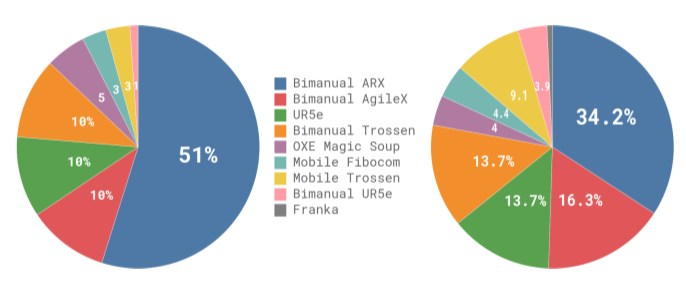
図4：我々のデータセットの概要。事前学習用の混合データは、OXE［10］の部分集合と π データセットからなる。我々は OXE Magic Soup［24］と呼ばれる OXE の部分集合を用いる。右図は事前学習用の混合データにおける各データセットの重みを示す。左図はステップ数で測ったそれぞれの相対的なサイズを示す。
図中ラベル（凡例）：Bimanual＝双腕、Mobile＝移動型。ロボット名（ARX、AgileX、UR5e、Trossen、Fibocom、Franka）およびデータセット名 OXE Magic Soup は原文のまま。
事前学習用の混合データの概要を図4に示す。各学習事例は 1 つのタイムステップ、すなわち組 \( (\mathbf{o}_t, \mathbf{A}_t) \) に対応するため、本議論ではデータ量をタイムステップ数で定量化する。学習用の混合データの 9.1% は、OXE［10］、Bridge v2［52］、DROID［23］を含むオープンソースのデータセットからなる。これらのデータセットのロボットとタスクは通常 1 台または 2 台のカメラを持ち、2〜10 Hz の低周波数制御を用いる。しかし、これらのデータセットは幅広い物体と環境をカバーしている。器用でより複雑なタスクを学習するために、我々独自のデータセットから 903M タイムステップのデータも用いる。そのうち 106M ステップは単腕ロボット、797M ステップは双腕ロボットからのものである。このデータは 68 のタスクを含み、各タスクは複雑な振る舞いから構成されている。たとえば「片付け（bussing）」タスクでは、多種多様な皿、カップ、食器類を片付け用の容器に入れ、さまざまなゴミをゴミ箱に入れる必要がある。このタスクの定義は、名詞と動詞の任意の組み合わせ（例：“pick up the cup”（カップを拾う）と “pick up the plate”（皿を拾う））をそれぞれ別のタスクとするのが一般的な先行研究とは大きく異なることに注意されたい。したがって、我々のデータセットにおける振る舞いの実際の範囲は、この「タスク」数から想像されるよりもはるかに広い。データセット内の具体的なロボットとタスクについては V-C 節で詳しく述べる。
データセットのサイズにはいくらか偏りがあるため（例：より難しい洗濯物畳みタスクが過剰に含まれている）、各タスクとロボットの組み合わせを \( n^{0.43} \) で重み付けする。ここで \( n \) はその組み合わせのサンプル数であり、過剰に含まれる組み合わせの重みが下がるようにしている。コンフィギュレーションベクトル \( \mathbf{q}_t \) と行動ベクトル \( \mathbf{a}_t \) は、常にデータセット中で最大のロボットの次元数を持つ（我々の場合は 18 であり、2 本の 6 自由度アーム、2 つのグリッパ、移動ベース、上下に駆動される胴体に対応する）。コンフィギュレーション空間と行動空間の次元がより低いロボットについては、コンフィギュレーションベクトルと行動ベクトルをゼロパディングする。画像が 3 枚未満のロボットについては、欠けている画像スロットもマスクする。
事後学習段階では、より小規模なタスク固有のデータセットでモデルをファインチューニングし、特定の下流アプリケーションに特化させる。前述のとおり、我々の「タスク」の定義はかなり広い。たとえば「片付け」タスクでは多種多様な物体を操作する必要がある。タスクによって必要なデータセットは大きく異なり、最も単純なタスクでは 5 時間のデータで済むが、最も複雑なタスクでは 100 時間以上のデータを用いる。
テーブルの片付けのように意味的推論と高レベルの戦略を必要とするより複雑なタスクも、高レベルのタスク（“bus the table”（テーブルを片付ける）など）をより直接的なサブタスク（“pick up the napkin”（ナプキンを拾う）や “throw the napkin into the trash”（ナプキンをゴミ箱に捨てる）など）に分解する高レベル方策から恩恵を受けることができる。我々のモデルは言語入力を処理するように学習されているため、高レベル VLM を用いてこうした意味的推論を行うことができる。これは SayCan［2］のような LLM／VLM による計画手法に類似した方法である。VI 節で述べるように、いくつかの実験タスクでは、このような高レベル方策を用いて我々のモデルの高レベル戦略を支援する。
我々の器用操作データセットは、7 種類の異なるロボット構成と 68 のタスクを含む。これらのプラットフォームを図5にまとめ、以下で説明する。
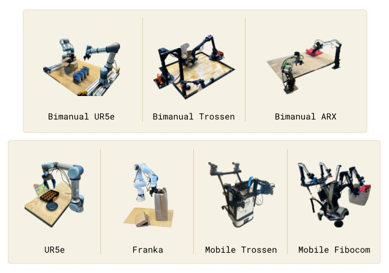
図5：実験で使用したロボット。6 自由度および 7 自由度のアームを備えた単腕・双腕マニピュレータに加え、ホロノミックおよび非ホロノミックの移動マニピュレータが含まれる。π0 はこれらすべてのプラットフォームで同時に学習される。
図中ラベル：Bimanual UR5e＝双腕 UR5e、Bimanual Trossen＝双腕 Trossen、Bimanual ARX＝双腕 ARX、Mobile Trossen＝移動型 Trossen、Mobile Fibocom＝移動型 Fibocom
UR5e。平行グリッパを備えたアームで、手首に取り付けたカメラと肩越しのカメラを持ち、合計 2 枚のカメラ画像と 7 次元のコンフィギュレーション空間および行動空間を持つ。
双腕 UR5e。2 台の UR5e を組み合わせた構成で、合計 3 枚のカメラ画像と 14 次元のコンフィギュレーション空間および行動空間を持つ。
Franka。Franka の構成は 2 台のカメラと 8 次元のコンフィギュレーション空間および行動空間を持つ。
双腕 Trossen。この構成は、ALOHA の構成［4, 57］に基づく配置の 2 本の 6 自由度 Trossen ViperX アームを持ち、2 台の手首カメラと 1 台のベースカメラ、および 14 次元のコンフィギュレーション空間と行動空間を持つ。
双腕 ARX および双腕 AgileX。この構成は 2 本の 6 自由度アームを用い、ARX または AgileX のアームのいずれかに対応し、3 台のカメラ（手首 2 台とベース 1 台）と 14 次元のコンフィギュレーション空間および行動空間を持つ。このクラスは 2 つの異なるプラットフォームを含むが、運動学的特性が類似しているため一つに分類している。
移動型 Trossen および移動型 ARX。この構成は Mobile ALOHA［57］プラットフォームに基づいており、移動ベース上に 2 本の 6 自由度アームを持ち、アームは ARX アームまたは Trossen ViperX アームのいずれかである。非ホロノミックなベースは 2 つの行動次元を追加し、14 次元のコンフィギュレーション空間と 16 次元の行動空間となる。2 台の手首カメラと 1 台のベースカメラがある。このクラスは 2 つの異なるプラットフォームを含むが、運動学的特性が類似しているため一つに分類している。
移動型 Fibocom。ホロノミックなベース上の 2 本の 6 自由度 ARX アーム。ベースは 3 つの行動次元（並進 2、向き 1）を追加し、14 次元のコンフィギュレーション空間と 17 次元の行動空間となる。
各ロボットのデータが我々のデータセットに占める割合を図4にまとめる。
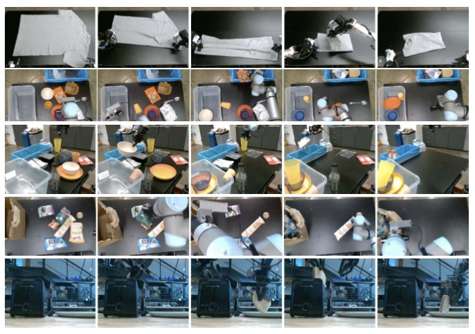
図6：そのまま（out-of-box）の評価タスク。ベースモデルを評価するため、事前学習後のモデルを 5 つのタスクで実行する。シャツ畳み、片付け（易）、片付け（難）、食料品の袋詰め、トースターからトーストを取り出すである。これらのタスクには、器用な操作、多段階の振る舞い、意味的認識の組み合わせが必要である。
我々の実験評価は、ベース（事前学習済み）モデルを直接プロンプトで指示して他のモデル設計と比較する、そのまま（out-of-box）の評価実験と、難しい下流タスクで我々のモデルを評価し、器用な操作のために提案されてきた他の手法と比較する詳細なファインチューニング実験からなる。以下の研究課題を検討する。
π0 は、事前学習データに含まれるさまざまなタスクにおいて、事前学習後にどの程度うまく動作するか？この問いを、π0 を直接評価し、他のロボット基盤モデルと比較することで検討する。
π0 はどの程度うまく言語命令に従うか？これらの実験では、言語命令に従う性能を評価するため、π0 を、VLM による初期化を行わない我々のモデルの小型版 π0-small と比較する。人間が与えた命令と、V-B 節で述べた高レベル VLM 方策が指定する命令の両方で評価する。
π0 は、器用な操作タスクに対処するために特に提案された手法と比べてどうか？これらの実験では、我々のモデルを事前学習済みの初期値からファインチューニングすることも、タスク固有のデータでスクラッチから学習することもできる下流タスクを検討し、器用な操作のために提案された従来手法と比較する。我々のアーキテクチャと事前学習手順の両方の利点を評価することを目指す。
π0 は複雑な多段階タスクに適応できるか？最後の一連の実験では、洗濯物畳みやテーブルの片付けを含む、特に複雑なタスク群に π0 をファインチューニングする。これらのタスクは完了までに 5〜20 分かかる。一部のタスクでは高レベル方策による誘導が必要である。
最初の一連の実験では、事後学習を一切行わずに、混合データ全体での事前学習後のモデルを評価し、ベースモデルがさまざまなタスクをどの程度うまく実行できるかを評価する。文献中の他のロボット基盤モデル、すなわち VLA と、同じ事前学習用混合データでスクラッチから学習したより小さなモデルの両方と比較する。図6に示す以下のタスクで評価し、各タスクは同じベースモデルに言語命令で指示する。
シャツ畳み：ロボットは、平らに広げられた状態から始まる T シャツを畳まなければならない。
片付け（易）：ロボットはテーブルを片付け、ゴミをゴミ箱に、食器を食器用容器に入れなければならない。スコアは正しい容器に置かれた物体の数を示す。
片付け（難）：片付けタスクのより難しい版であり、より多くの物体と、より難しい配置を含む。たとえば、食器類が意図的にゴミの上に置かれていたり、物体同士が互いに邪魔し合っていたり、事前学習データセットに含まれない物体があったりする。
食料品の袋詰め：ロボットは、ポテトチップス、マシュマロ、キャットフードなど、すべての食料品を袋に詰めなければならない。
トースターからトーストを取り出す：ロボットはトースターからトーストを取り出す。
この規模で動作できる先行モデルはごくわずかであるため、これらの実験で比較を行うことは難しい。我々は、もともと OXE データセット［10］で学習された 7B パラメータの VLA モデルである OpenVLA［24］と比較する。OpenVLA を我々の混合データ全体で学習する。これは、行動チャンキングや高周波数制御をサポートしない OpenVLA にとって非常に難しい混合データである。また、より小さな 93M パラメータのモデルである Octo［50］とも比較する。Octo は VLA ではないが、行動の生成に拡散過程を用いるため、我々のフローマッチング VLA にとって価値ある比較対象となる。Octo も我々のモデルと同じ混合データで学習する。時間的制約のため、OpenVLA と Octo を我々の完全なモデルと同じエポック数だけ学習させることはできなかった。そこで、我々のモデルの「計算量同等（compute parity）」版とも比較する。これは 160k ステップのみ（主モデルの 700k ステップに対して）学習したものであり、ベースラインに与えたステップ数（OpenVLA は 160k、Octo は 320k）以下である。また、UR5e タスクでさらに強力なベースラインを提供することを期待して、クロスエンボディメント学習を行わずに UR5e のデータのみでファインチューニングした OpenVLA モデルの版も含める。最後に、IV 節で述べた π0-small モデルとの比較も含める。これは VLM 事前学習を行わない我々のモデルの縮小版とみなせる。
評価指標には、タスクと手法ごとに 10 エピソードで平均した正規化スコアを用いる。エピソードは完全に成功した場合に 1.0 のスコアを、部分的に成功した場合には端数のスコアを受け取る。たとえば片付けのスコアは、正しい容器に正しく置かれた物体の割合である。採点基準は付録 E に記述する。図7に示す結果から、π0 はそのままの評価タスクのすべてにおいて群を抜いて最良の結果を達成し、シャツ畳みと易しい方の片付けタスクではほぼ完全な成功率を示し、すべてのベースラインに対して大きな改善を示すことが分かる。160k ステップのみ学習した π0 の「同等（parity）」版でさえすべてのベースラインを上回り、π0-small ですら OpenVLA と Octo を上回る。OpenVLA がこれらのタスクで苦戦するのは、その自己回帰的な離散化アーキテクチャが行動チャンクをサポートしないためである。UR5e のみの OpenVLA モデルはより良い性能を示すが、それでも π0 の性能には遠く及ばない。Octo は行動チャンクをサポートするが、表現能力が比較的限られている。この比較は、大規模で表現力の高いアーキテクチャと、フローマッチングや拡散によって複雑な分布をモデル化する能力とを組み合わせることの重要性を示している。さらに、π0-small との比較は、VLM 事前学習を取り入れることの重要性を示している。残念ながら、この最後の比較を公平にすることは難しい。π0-small はより少ないパラメータを用いるが、より大きなモデルは事前学習なしでは使いにくいからである。全体として、これらの実験は、π0 が多様なロボットで多様なタスクを効果的に実行する能力を持つ強力な事前学習済みモデルを提供し、先行モデルよりもはるかに優れた性能を持つことを示している。
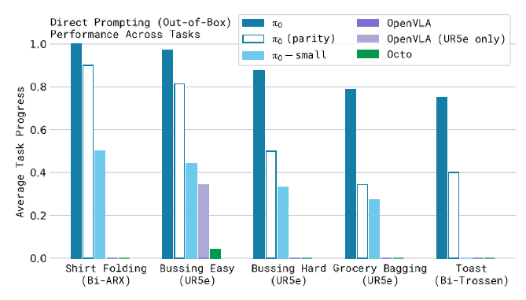
図7：そのまま（out-of-box）の評価結果。700k ステップの全行程で学習した π0、ベースラインモデルの更新回数に合わせて 160k ステップ学習した版、π0-small、そして 3 つのベースライン、すなわち我々の全データで学習した OpenVLA と Octo、および UR5e タスクのみで学習した OpenVLA（UR5e タスクではこちらの方がうまく機能することが分かった）を評価する。すべてのタスクとすべての比較において、我々のモデルの「同等（parity）」版でさえすべてのベースラインを上回り、我々のモデルの完全版は大差で最良の結果を達成する。
図中ラベル：Direct Prompting (Out-of-Box) Performance Across Tasks＝直接プロンプト（そのまま）での各タスクの性能、Average Task Progress＝平均タスク進捗、π0 (parity)＝π0（同等版）、OpenVLA (UR5e only)＝OpenVLA（UR5e のみ）、Shirt Folding (Bi-ARX)＝シャツ畳み（双腕 ARX）、Bussing Easy (UR5e)＝片付け・易（UR5e）、Bussing Hard (UR5e)＝片付け・難（UR5e）、Grocery Bagging (UR5e)＝食料品の袋詰め（UR5e）、Toast (Bi-Trossen)＝トースト（双腕 Trossen）
次の一連の実験では、ベースの π0 モデルを、一連の評価ドメインにおいて言語命令に従うようにファインチューニングする。このファインチューニングした π0 モデルを、前節で最も強力なベースラインであることが分かった、IV 節で述べた π0-small モデルと比較する。π0-small は VLM による初期化を用いないことを思い出されたい。したがって、この実験は、VLM 事前学習が言語指示に従う我々のモデルの能力をどれだけ高めるかを測ることを目的としている。なお、π0-small は大幅に小さなモデルでもある。残念ながら、この交絡要因を取り除くことは難しい。VLM による初期化は、過学習なしにはるかに大きなモデルを学習することを現実的にするとともに、言語指示への追従を改善するという両方の役割を果たすからである。それでもなお、この実験が π0 の言語能力を明らかにすることを期待する。各タスクの言語指示は、拾い上げる物体とそれらを置く場所からなり、言語ラベルが付けられた約 2 秒の長さのセグメントで構成される。各タスク全体は、こうしたセグメントが多数連なって構成される。この評価のタスクは次のとおりである。
片付け：ロボットはテーブルを片付け、食器とカトラリーを容器に、ゴミをゴミ箱に入れなければならない。
テーブルセッティング：ロボットは容器から物を取り出してテーブルをセットしなければならない。ランチョンマット、食器、銀食器、ナプキン、カップを含み、言語指示に従ってそれらを調整する。
食料品の袋詰め：ロボットは、コーヒー豆、大麦、マシュマロ、海苔、アーモンド、スパゲッティの袋や缶などの食料品を袋に詰めなければならない。
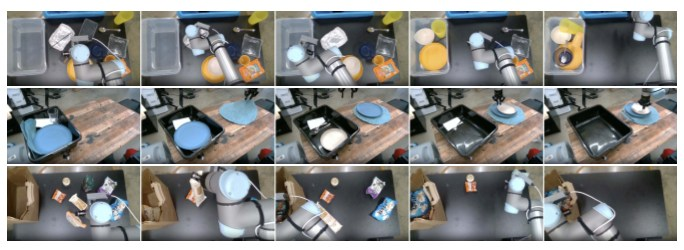
図8：言語評価のタスク。3 つの異なる言語条件付きタスクで我々のモデルを評価する。いずれも一連の中間的な言語命令に従う必要がある。タスクは、食器を容器に、ゴミをゴミ箱に入れるテーブルの片付け（上段）、容器から物を取り出してテーブルをセットする（中段）、買い物袋に詰める（下段）である。
図8に、評価における言語条件付きタスクを示し、評価結果を提示する。5 つの異なる条件を評価する。π0-flat（および π0-small-flat）は、中間的な言語命令なしに、タスクの説明（例：“bag the groceries”（食料品を袋に詰める））でモデルに直接命令することに対応する。π0-human（および π0-small-human）は、熟練した人間のユーザーからの中間ステップの命令（例：どの物体を拾い、どこに置くか）を与える。これらの条件は、より詳細な言語命令に従う各モデルの能力を評価する。これらの中間命令はタスクの実行方法について多くの情報を与えるが、モデルがその恩恵を受けるには、それらの命令を理解して従えなければならない。最後に、π0-HL は、V-B 節で述べたように、高レベル VLM が与える高レベル命令を用いて π0 を評価する。この条件も人間の熟練者なしの自律的なものである。
タスクあたり 10 試行で平均した図9の結果は、π0 の言語追従の正確さが π0-small よりも大幅に優れていることを示している。これは、より大きな事前学習済み VLM による初期化によって大幅な改善が得られることを示唆している。この能力は、熟練した人間による誘導（π0-human）および高レベルモデルによる誘導（π0-HL）での性能向上につながっている。この結果は、π0 の言語追従能力が、高レベルの誘導を伴う複雑なタスクにおけるより優れた自律的性能に直接つながることを示している。
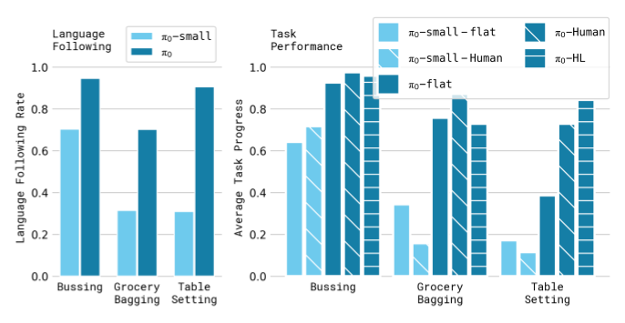
図9：言語評価。全体のタスク命令（例：“bag the groceries”（食料品を袋に詰める））のみを受け取る我々の方策の「フラット」版 −flat を、熟練した人間から中間命令を受け取る方法 −human、および高レベル VLM 方策から中間命令を受け取る方法 −HL と比較する。また、「熟練者」条件のもとで、我々のモデルを VLM を用いない小型の変種と、言語追従の正確さの観点で比較する（π0 と π0-small）。結果は、熟練した人間が与える中間的な言語命令によって π0 が大幅に改善し、自律的な高レベル方策によってもそれより小さい程度ながら改善することを示している。特に、π0-small は言語追従能力が限られているため、全体として高レベルの熟練者を追加しても性能が向上しない。
図中ラベル：Language Following＝言語追従、Language Following Rate＝言語追従率、Task Performance＝タスク性能、Average Task Progress＝平均タスク進捗、Bussing＝片付け、Grocery Bagging＝食料品の袋詰め、Table Setting＝テーブルセッティング
次の一連の実験では、事前学習データとは大きく異なり、まったく新しい振る舞いを必要とする新しいタスクで我々のモデルを評価する。これらの評価では、新しいタスクごとにさまざまな量のデータを用いてモデルをファインチューニングする。各タスクはいずれも新しいものであるが、事前学習データのタスクとどの程度異なるかに応じて、タスクを「段階（tier）」に分ける。図10に示すタスクは次のとおりである。
UR5e によるボウルの積み重ね。このタスクでは、大きさの異なる 4 つのボウルを積み重ねる必要がある。このタスクは事前学習データの片付けタスクと同様に食器を掴んで動かす必要があるため、「易」の段階に分類する。学習データにはさまざまなボウルが含まれ、評価では既知のボウルと未知のボウルを混ぜて用いる。
タオル畳み。このタスクではタオルを畳む必要がある。これは事前学習に含まれるシャツ畳みに似ているため、「易」の段階に分類する。
電子レンジにタッパーを入れる。このタスクでは、電子レンジを開け、プラスチック容器を中に入れ、閉める必要がある。容器にはさまざまな形状と色があり、評価では既知の容器と未知の容器を混ぜて用いる。容器の操作は事前学習データに似ているが、電子レンジは事前学習には含まれていない。
ペーパータオルの交換。このタスクでは、古い厚紙のペーパータオルの芯をホルダーから外し、新しいペーパータオルのロールに交換する必要がある。このような物は事前学習に含まれていないため、これを「難」とみなす。
Franka による引き出しへの収納。このタスクでは、引き出しを開け、物を引き出しに詰め、閉める必要がある。事前学習には Franka ロボットによる類似タスクがないため、これを「難」とみなす。
ファインチューニング後の我々のモデルを、同じく事前学習とファインチューニングのレシピを用いる OpenVLA［24］および Octo［50］の両方と比較する。我々の目的は（アーキテクチャではなく）特定のモデルを評価することであるため、これらのモデルについては OXE［10］で学習された公開の事前学習済みチェックポイントを用い、それを各タスクにファインチューニングする。また、より小さなデータセットから器用なタスクを学習するために特別に設計された ACT［57］および Diffusion Policy［9］とも比較する。ACT と Diffusion Policy はファインチューニング用データセットのみで学習するが、そのサイズは ACT と Diffusion Policy の実験で用いられた個々のデータセット［9, 57］と同程度である。π0 は、事前学習済みのベースモデルからのファインチューニングと、スクラッチからの学習の両方で評価する。この比較は、π0 アーキテクチャと我々の事前学習手順それぞれの利点を評価することを意図している。我々は、VLM による初期化を伴う π0 アーキテクチャがすでに個々のタスクに対してより強力な出発点を提供し、事前学習手順が、特にファインチューニング用データセットが小さい場合に、その性能をさらに向上させるはずだという仮説を立てる。
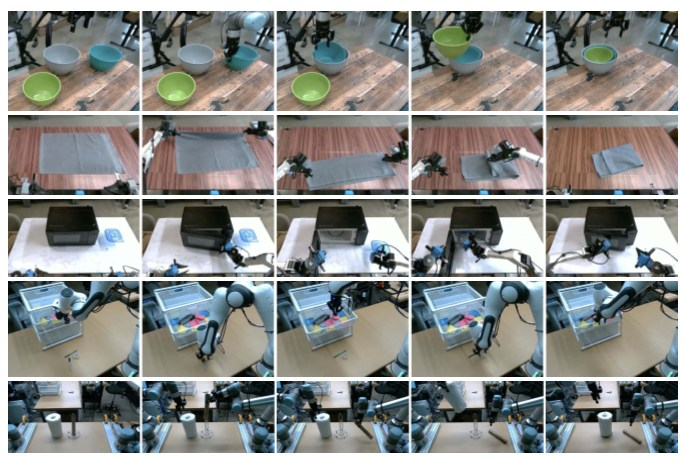
図10：ファインチューニングの評価タスク。事前学習で見たタスクとは異なるさまざまな下流タスクに我々のモデルをファインチューニングする。我々のタスクは事前学習タスクとの類似度の幅を表しており、事前学習に最も似たタスク（ボウルの積み重ねとタオル畳み）、未知の新しい要素（電子レンジ）を導入するタスク、新しい動作と新しい種類の物体を必要とするタスク（Franka による引き出しへの収納とペーパータオルの交換）を含む。
図11は、各タスクのファインチューニングデータ量を変えたときの、さまざまな手法のすべてのタスクにわたる性能を、タスクあたり 10 試行で平均して示している。ボウルの積み重ねと電子レンジにタッパーを入れるタスクにはすべてのベースラインを含める。OpenVLA と Octo は大幅に悪い性能しか達成しないため、実世界で非常に多くのモデルを評価する時間的コストの関係から、これらはデータセットサイズの 1 つについてのみ実行する。結果は、π0 が概して他の手法を上回ることを示している。興味深いことに、最も強力な従来モデルは対象タスクでスクラッチから学習したモデルであり、これらのドメインで事前学習を活用することが従来のアプローチにとって大きな課題であることを示唆している。タッパーのタスクでは π0 の 5 時間の方策はベースラインと同程度の性能であるが、1 時間版は大幅に優れている。予想どおり、事前学習は事前学習データにより似たタスクでより大きな改善をもたらすが、事前学習済みモデルは事前学習なしのモデルよりもしばしば優れており、ときには 2 倍にも達する。
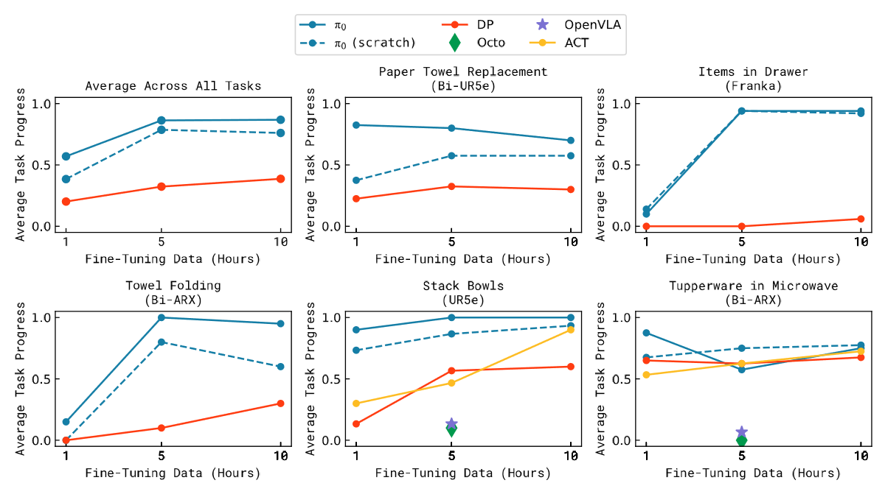
図11：データ量を変えたファインチューニング。π0 は、より少ないデータ量でもいくつかのより易しいタスクを学習でき、事前学習済みモデルはしばしばスクラッチから学習したモデルよりも大きな改善を達成する。
図中ラベル：π0 (scratch)＝π0（スクラッチから学習）、DP＝Diffusion Policy、Average Across All Tasks＝全タスクの平均、Paper Towel Replacement (Bi-UR5e)＝ペーパータオルの交換（双腕 UR5e）、Items in Drawer (Franka)＝引き出しへの収納（Franka）、Towel Folding (Bi-ARX)＝タオル畳み（双腕 ARX）、Stack Bowls (UR5e)＝ボウルの積み重ね（UR5e）、Tupperware in Microwave (Bi-ARX)＝電子レンジにタッパーを入れる（双腕 ARX）、Average Task Progress＝平均タスク進捗、Fine-Tuning Data (Hours)＝ファインチューニングデータ（時間）
最後の一連の実験では、ファインチューニングと言語の組み合わせによって、さまざまな難しい多段階タスクに取り組む。これらのタスクの一部については事前学習にデータが含まれているが、習熟するにはファインチューニングが必要である。また一部については事前学習にデータが含まれていない。図12に示すこの評価のタスクは次のとおりである。
洗濯物畳み：このタスクでは、固定された（移動しない）双腕システムで衣類を畳む必要がある。衣類はランダムにくしゃくしゃになった状態で容器に入っており、目標は衣類を取り出し、畳み、すでに畳んだ衣類の山の上に置くことである。くしゃくしゃの洗濯物のランダムな初期状態は大きな課題となる。方策が任意の状態に汎化する必要があるからである。このタスクは事前学習に含まれている。
移動型での洗濯物畳み：ここでは、図5の Fibocom 移動ロボットが洗濯物を畳まなければならず、向きと並進を制御しながら同じ多くの課題に直面する。このタスクは事前学習に含まれている。
乾燥機からの取り出し：ここでは、Fibocom 移動ロボットが乾燥機から洗濯物を取り出し、洗濯かごに入れなければならない。このタスクは事前学習に含まれている。
テーブルの片付け：このタスクでは、散らかった場面にある多種多様な未知の物体を含むテーブルを片付ける必要があり、そのままの評価でのベンチマークよりもはるかに大きな課題となる。方策は、さまざまな形状と大きさの未知の物体に汎化し、大きな皿を拾うためにグリッパをひねったり、グラスのような薄く壊れやすい物を慎重に掴んだりといった、複雑で器用な動作を実行しなければならない。ロボットは密集した散らかりに対処し、さまざまな振る舞いを知的に順序立てなければならない。たとえば、ゴミの載った皿を片付けるには、まず皿を拾い、次に中身をゴミ箱に振り落とし、それから皿を容器に入れなければならない。このタスクは事前学習には含まれていない。
箱の組み立て：ロボットは、平らに畳まれた状態から始まる段ボール箱を組み立てなければならない。このタスクにはいくつかの大きな課題がある。箱を正しく折り曲げる必要があり、ロボットは箱の一部を折りながら他の部分を押さえておく必要があり、折る動作の際には両腕だけでなくテーブルの表面も支えとして利用する。ロボットはいくつかの折りをやり直す必要があるかもしれず、反応的で知的な戦略が求められる。このタスクは事前学習には含まれていない。
持ち帰り用容器：このタスクでは、いくつかの食品を皿から持ち帰り用容器に移す必要があり、食品がはみ出さないように容器に詰め、その後両腕で容器を閉じる必要がある。このタスクは事前学習には含まれていない。
卵の詰め込み：ロボットはボウルから 6 個の卵を取り出して卵パックに詰め、パックを閉じる必要がある。卵はボウル内での姿勢に応じた適切な方法で掴み、パックの空いているスロットに置く必要がある。卵の形状、滑りやすさ、慎重な配置の必要性のため、これは難しい課題となる。箱を閉じるには両腕を使う必要がある。このタスクは事前学習には含まれていない。
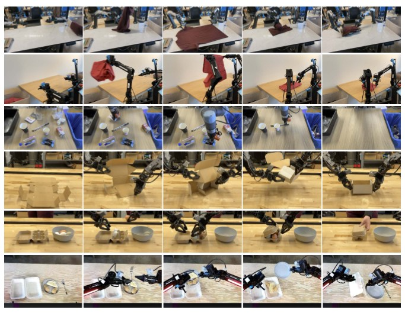
図12：さまざまな複雑で時間的に長いタスクを評価する。これには、固定型（a）または移動型（b）ロボットによる容器からの洗濯物畳み、実際の昼食後のテーブルの片付け（c）、箱の組み立て（d）、卵パックへの卵の詰め込み（e）、持ち帰り用容器への食品の詰め込み（f）が含まれる。これらのタスクでは、掴む、積み重ねる、畳む、平らにするといった何十もの個別の振る舞いを組み合わせること、物体の非常に多様な配置への汎化、そして変形する物体や柔軟な段ボールといった複雑な物理的特性への対処が必要である。
タスクごとの 10 試行の平均スコアを示す結果を図13に示す。採点基準は付録 E にある。スコア 1.0 は完全な遂行を表し、部分的なスコアは部分的に完了したタスクに対応する（例：0.5 は物体の半分が正しく片付けられたことを示す）。これらのタスクは非常に難しく、他の手法では解くことができなかった。そこで、これらのタスクを用いて我々のアプローチのアブレーションと比較し、事前学習とファインチューニングの後の π0、事前学習のみの後にそのまま用いた場合（「out-of-box」）、事前学習を一切行わずにファインチューニングデータで学習した場合（「scratch」）を評価する。結果は、π0 がこれらのタスクの多くを解くことができ、事前学習とファインチューニングを完全に行うレシピが全般的に最良の性能を示すことを示している。これらのより難しいタスクの多くでは、事前学習済みモデルを用いることで非常に大きな改善が見られ、事前学習がより難しいタスクで特に有用であることを示していることに注意されたい。π0 の絶対的な性能はタスクによって異なるが、これはおそらくタスクの難しさと、タスクが事前学習にどの程度含まれているかの違いによるものである。これらのタスクとその複雑さについてより完全な印象を得るために、読者には付随するウェブサイトでタスクの動画を見ることを勧める。このような難しいタスクにおけるこの水準の自律的性能は、学習された方策による器用なロボット操作における新たな最先端を示すものであると我々は考える。
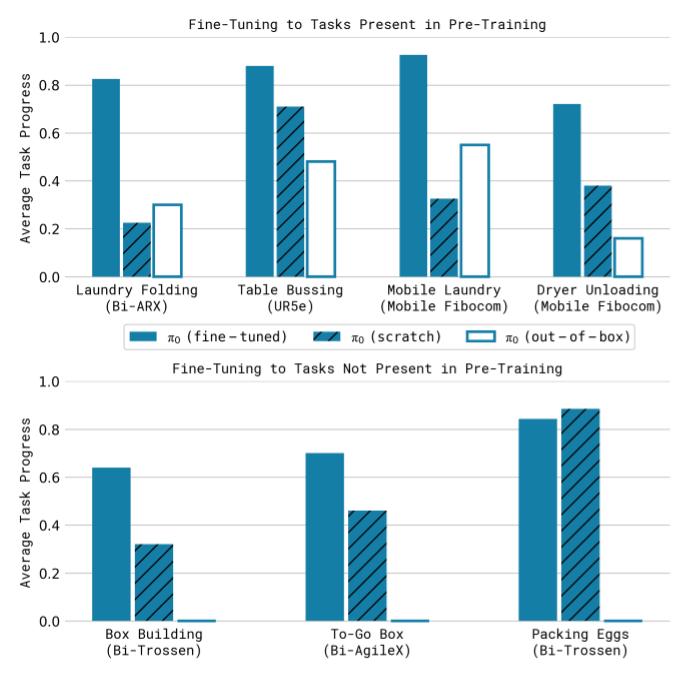
図13：複雑なタスクにおける事後学習の結果（10 試行の平均スコア）。事前学習を完全に行った π0 モデルは、すべてのタスクで最大スコアの 50% 超を達成し、概してアブレーションを上回り、最も難しいタスクで特に大きな改善を示す。
図中ラベル：Fine-Tuning to Tasks Present in Pre-Training＝事前学習に含まれるタスクへのファインチューニング、Fine-Tuning to Tasks Not Present in Pre-Training＝事前学習に含まれないタスクへのファインチューニング、Average Task Progress＝平均タスク進捗、π0 (fine-tuned)＝π0（ファインチューニング済み）、π0 (scratch)＝π0（スクラッチ）、π0 (out-of-box)＝π0（そのまま）、Laundry Folding (Bi-ARX)＝洗濯物畳み（双腕 ARX）、Table Bussing (UR5e)＝テーブルの片付け（UR5e）、Mobile Laundry (Mobile Fibocom)＝移動型での洗濯物畳み（移動型 Fibocom）、Dryer Unloading (Mobile Fibocom)＝乾燥機からの取り出し（移動型 Fibocom）、Box Building (Bi-Trossen)＝箱の組み立て（双腕 Trossen）、To-Go Box (Bi-AgileX)＝持ち帰り用容器（双腕 AgileX）、Packing Eggs (Bi-Trossen)＝卵の詰め込み（双腕 Trossen）
我々は、π0 と呼ぶロボット基盤モデルを学習するためのフレームワークを提示した。これは、高度に多様なデータでの事前学習と、それに続くそのままでの評価または複雑な下流タスクへのファインチューニングからなる。我々の実証的評価は、器用さ、汎化、時間的に長い多段階の振る舞いを組み合わせたタスクを検討している。我々のモデルは、インターネット規模の視覚言語モデル（VLM）の事前学習と、複雑な高周波数の行動チャンクを表現するためのフローマッチングを取り入れている。我々の事前学習用の混合データは、OXE［10］、DROID［23］、Bridge［52］から得た大量の既存のロボット操作データに加え、7 種類の異なるロボット構成と 68 のタスクから得た 10,000 時間の器用操作データからなる。我々の知る限り、これはロボット操作モデルに用いられた中で最大の事前学習用混合データである。我々のファインチューニング実験は 20 を超えるタスクを含み、我々のモデルが、従来の VLA モデル［24］や器用な操作のために特に設計されたモデル［57, 9］を含むさまざまなベースラインを上回ることを示している。また、我々の事後学習レシピが、任意の初期状態から複数の衣類を畳む、箱を組み立てるといった非常に複雑なタスクをどのように可能にするかも検討した。
我々のフレームワークは、大規模言語モデルに用いられる学習手順に大まかに似ている。それは通常、Web から収集された非常に大規模なデータセットでベースモデルを事前学習し、続いて、指示に従いユーザーの命令を実行できるようにモデルを「アラインメント」することを目的とした事後学習手順を行うものである。こうしたモデルにおける「知識」の大部分は事前学習段階で獲得され、事後学習段階はその知識をユーザーの命令を満たすためにどう活用すべきかをモデルに伝える役割を果たす、と一般に認識されている。我々の実験は、ロボット基盤モデルでも類似の現象が起こりうることを示唆している。事前学習済みモデルはある程度のゼロショット能力を持つが、洗濯物畳み（訳注：原文は “laundry following” だが、文脈から “laundry folding” の誤りと判断した）のような複雑なタスクには高品質データによるファインチューニングが必要である。この高品質データのみで学習すると、失敗から確実に回復できない脆いモデルになる一方、事前学習済みモデルをゼロショットで実行すると、事後学習データで示される滑らかな戦略を必ずしも示さない。
我々の結果が、汎用的で広く適用可能なロボット基盤モデルに向けた足がかりとなることを期待する。我々の実験は、そのようなモデルが近いうちに現実のものとなる可能性を示唆しているが、いくつかの限界があり、今後の研究の余地も大いにある。第一に、我々の実験は、事前学習データセットをどのように構成すべきかについてまだ包括的な理解を与えていない。我々は利用可能なすべてのデータを組み合わせたが、どのような種類のデータを追加するとより役立つか、またそれをどのように重み付けすべきかを理解することは未解決の問題である。我々の評価におけるすべてのタスクが確実に機能するわけではなく、ほぼ完全な性能を達成するためにどれだけの量のどのような種類のデータが必要かを予測する方法も依然として不明である。最後に、高度に多様なデータ、特に異なるタスクや異なるロボットからのデータを組み合わせることでどれだけの正の転移が得られるかは、まだ分からない。我々の結果は、普遍的な事前学習済みロボット基盤モデルが現実のものとなる可能性を示唆しているが、この普遍性が自動運転、ナビゲーション、脚移動のような大きく異なるドメインにまで及ぶかどうかを理解することは、今後の課題として残されている。
論文へのフィードバックと図や動画の作成への協力について Laura Smith と Dibya Ghosh に、文章へのフィードバックについて Philip Clark、Kelly Sims、Saunaz Moradi に、イラスト、デザイン、動画への協力について Evan Pokrandt、Joakim Keussen、Dan Philibin、Eitan Penner、Adam Lisagor、Greg Miller に感謝する。また、有益な技術的議論について Lili Yu に感謝する。ロボット操作データをたゆまず収集してくれたすべてのロボットオペレーターに深く感謝する。完全な貢献声明については付録 A を参照されたい。
参考文献は原文のまま掲載した。
著者らは以下の分野に貢献した（アルファベット順に記載）。
データと運用：Noah Brown、Michael Equi、Chelsea Finn、Niccolo Fusai、Lachy Groom、Liyiming Ke、Suraj Nair、Lucy Shi、Anna Walling。
評価実験：Kevin Black、Michael Equi、Chelsea Finn、Brian Ichter、Liyiming Ke、Adrian Li-Bell、Suraj Nair、Karl Pertsch、Lucy Shi。
モデル設計：Kevin Black、Brian Ichter、Sergey Levine、Karl Pertsch、Lucy Shi、Quan Vuong。
事後学習：Michael Equi、Chelsea Finn、Liyiming Ke、Adrian Li-Bell、Suraj Nair、Lucy Shi。
事前学習：Kevin Black、Danny Driess、Brian Ichter、Sergey Levine、Karl Pertsch、Lucy Shi、Quan Vuong。
ロボットハードウェア：Noah Brown、Adnan Esmail、Chelsea Finn、Tim Jones、Mohith Mothukuri。
ロボットソフトウェア：Karol Hausman、Szymon Jakubczak、Sergey Levine、James Tanner、Haohuan Wang。
学習インフラ：Kevin Black、Michael Equi、Sergey Levine、Adrian Li-Bell、Suraj Nair、Quan Vuong、Haohuan Wang、Ury Zhilinsky。
執筆と図版：Kevin Black、Chelsea Finn、Lachy Groom、Karol Hausman、Brian Ichter、Sergey Levine、Quan Vuong。
本節では、モデルアーキテクチャの完全な説明を示す。我々は PaliGemma VLM［5］の設計に従うが、以下の相違点がある。（1）状態ベクトル \( \mathbf{q}_t \) と行動ベクトル \( \mathbf{A}_t = [\mathbf{a}_t, ..., \mathbf{a}_{t+H-1}] \) を含む、ロボット特有のトークンのための追加の入力射影と出力射影、（2）フローマッチングのタイムステップ情報 \( \tau \) を取り込むための追加の MLP、（3）行動エキスパートのための、より小さな第 2 の重みの集合である。
追加の入力と出力。標準的な PaliGemma アーキテクチャは、画像の系列 \( [\mathbf{I}^1_t, ..., \mathbf{I}^n_t] \) とそれに続く言語プロンプト \( \ell_t \) を入力として受け取る。我々は、ロボットの固有受容状態のための入力 \( \mathbf{q}_t \) を追加し、これを線形射影によってトランスフォーマーの埋め込み次元に写像する。入力トークンの最後の集合はノイズ付き行動チャンク \( \mathbf{A}^\tau_t = [\mathbf{a}^\tau_t, ..., \mathbf{a}^\tau_{t+H-1}] \) に対応し、トークン数は行動ホライズン（我々のタスクでは \( H = 50 \)）に等しい。\( H \) 個のノイズ付き行動に対応するトランスフォーマー出力のみを用い、それらを線形射影によって \( \mathbf{v}_\theta(\mathbf{A}^\tau_t, \mathbf{o}_t) \) に復号する。
フローマッチングのタイムステップの取り込み。ノイズ付き行動チャンク \( \mathbf{A}^\tau_t \) は、フローマッチングのタイムステップ \( \tau \) も取り込む MLP を用いて、トランスフォーマーの埋め込み次元に写像される。各ノイズ付き行動 \( \mathbf{a}^\tau_{t'} \) について、トランスフォーマーに入力される対応する埋め込みの式は \( W_3 \cdot \mathrm{swish}(W_2 \cdot \mathrm{concat}(W_1 \cdot \mathbf{a}^\tau_{t'}, \phi(\tau))) \) である。ここで \( \phi : \mathbb{R} \to \mathbb{R}^w \) は正弦波位置エンコーディング関数［51］、\( W_1 \in \mathbb{R}^{w \times d} \)、\( W_2 \in \mathbb{R}^{w \times 2w} \)、\( W_3 \in \mathbb{R}^{w \times w} \) であり、\( d \) は行動の次元、\( w \) は行動エキスパートの埋め込み次元（または幅（width））である。
注意マスク。π0 は 3 つのブロック \( [\mathbf{I}^1_t, ..., \mathbf{I}^n_t, \ell_t] \)、\( [\mathbf{q}_t] \)、\( [\mathbf{a}^\tau_t, ..., \mathbf{a}^\tau_{t+H-1}] \) からなるブロック単位の因果的注意マスクを用いる。各ブロック内では完全な双方向の注意があるが、各ブロックのトークンは後続のブロックのトークンに注意を向けることができない。第 1 ブロックは PaliGemma の VLM 事前学習で用いられた入力モダリティを含み、その事前学習からの分布シフトを最小化するため、後続のブロック（新しい入力を含む）に注意を向けることが禁じられている。ロボットの状態 \( \mathbf{q}_t \) はフローマッチングの積分ステップごとに変化しないため、独立したブロックとしている。これが最終ブロックに注意を向けないようにすることで、サンプリング中にその対応するキーとバリューをキャッシュできる。最終ブロックはノイズ付き行動 \( \mathbf{A}^\tau_t \) に対応し、入力系列全体に注意を向けることができる。
行動エキスパート。π0 は 2 つの重みの集合（エキスパート［45］とも呼ばれる）を持つ単一のトランスフォーマーとして実装されており、各トークンはどちらか一方のエキスパートにルーティングされる。重み同士はトランスフォーマーの自己注意層を通じてのみ相互作用する。画像と言語プロンプト \( [\mathbf{I}^1_t, ..., \mathbf{I}^n_t, \ell_t] \) は、PaliGemma から初期化するより大きな VLM バックボーンにルーティングされる。VLM の事前学習で見られなかった入力 \( [\mathbf{q}_t, \mathbf{A}^\tau_t] \) は行動エキスパートにルーティングされる。PaliGemma は Gemma 2B［49］言語モデルに基づいており、これはマルチクエリ注意［44］と、{width=2048, depth=18, mlp_dim=16,384, num_heads=18, num_kv_heads=1, head_dim=256} という構成を用いる。エキスパート同士は自己注意層でのみ相互作用するため、width と mlp_dim はエキスパート間で必ずしも一致している必要はない。推論（行動エキスパートの複数回の順伝播を必要とする）を高速化するため、行動エキスパートを {width=1024, mlp_dim=4096} に縮小し、パラメータ数は約 300M となる。
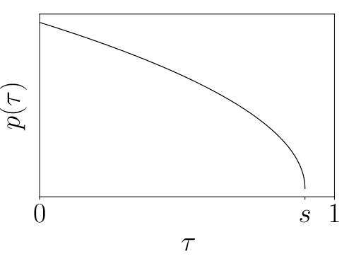
図14：フローマッチングのタイムステップのサンプリング分布。\( \tau \) を、より小さいタイムステップ（よりノイズの多い行動に対応する）を重視し、カットオフ値 \( s \) を超えるタイムステップをまったくサンプリングしない、シフトしたベータ分布からサンプリングする。実験では \( s = 0.999 \) を用いる。
フローマッチングのタイムステップのサンプリング。元のフローマッチングの論文［28, 32］は、フローマッチングのタイムステップを一様分布 \( \tau \sim \mathcal{U}(0, 1) \) からサンプリングする。Esser ら［14］は代わりに、中間のタイムステップを重視するロジット正規分布からサンプリングすることを提案している。著者らは、高いタイムステップ（低いノイズレベル）ではモデルは恒等関数を学習するだけでよく、低いタイムステップ（高いノイズレベル）ではデータ分布の平均を学習するだけでよいと主張している。しかし我々は、行動予測のタスクは高解像度画像の生成とは微妙に異なると仮説を立てる。テキストラベルを条件とした平均画像を予測するのは比較的容易かもしれないが、ロボットの観測を条件とした平均行動を予測すること（すなわち \( \mathbb{E}[\mathbf{A}_t|\mathbf{o}_t] \) を学習すること）ははるかに難しい問題である。なぜなら観測 \( \mathbf{o}_t \) は非常に情報量が多く、テキストラベルが可能な画像の分布を制約するよりもはるかに強く、可能な行動の分布を制約するはずだからである。その結果、我々は低いタイムステップ（高いノイズレベル）を重視するタイムステップのサンプリング分布を設計した。さらに、積分ステップ \( \delta \) が \( 1 - s \) より大きい限り不要であるため、所与のしきい値 \( s \) を超えるタイムステップはまったくサンプリングしない。この分布は \( p(\tau) = \mathrm{Beta}(\frac{s-\tau}{s}; 1.5, 1) \) で与えられ、図14に可視化されている。実験では \( s = 0.999 \) を用いる。これにより \( \delta \gt \frac{1}{1000} \)、すなわち最大 1,000 回の積分ステップが可能となる。
我々のベースラインアーキテクチャ π0-small は VLM バックボーンに基づいていない。したがって、これを VLM 事前学習の利点を評価するために用いる。我々はこれを、我々の大規模データセットに適合できる十分な表現力を持ちつつ、スクラッチから学習した場合にも良好な性能を発揮するように設計した。このモデルは約 470M のパラメータを持ち、主モデルとは次の点で異なる。（1）このモデルは言語モデルのバックボーンを用いないため、言語命令 \( \ell_t \) の言語トークンの符号化に DistilBERT［42］を用いる。（2）行動エキスパートは、デコーダのみの混合エキスパート［45］に近い主モデルとは異なり、従来のエンコーダ・デコーダ型トランスフォーマー［51］と同様に、観測エンコーダの出力に交差注意を向ける。（3）画像は、より小さな事前学習済みの ViT エンコーダ（具体的には Steiner ら［47］による R26-S-32 ResNet-ViT ハイブリッド）で符号化する。（4）ViT 画像エンコーダは重みを共有しない。（5）観測を符号化するトランスフォーマー・バックボーン（ViT 画像エンコーダの後に来るもの）は、インターネットデータで事前学習されていない。（6）行動エキスパートは Gemma アーキテクチャではなく DiT アーキテクチャ［36］を用いるため、フローマッチングのタイムステップ \( \tau \) を AdaLN-Zero 層を用いて取り込む。これ以外の点では、両モデルは概ね類似している。どちらも事前学習済みの ViT 画像エンコーダを用い、どちらも観測エンコーダと行動エキスパートに別個の重みを用い、どちらも同じ観測形式を入力とし、どちらも行動チャンクを予測するためにフローマッチングを 10 ステップ実行する。
我々のモデルは観測 \( \mathbf{o}_t = [\mathbf{I}^1_t, ..., \mathbf{I}^n_t, \ell_t, \mathbf{q}_t] \) とノイズ付き行動 \( \mathbf{A}^\tau_t \) を入力として受け取り、次のフローマッチングステップを得るために積分する必要のあるベクトル場 \( \mathbf{v}^\tau_t \) を出力することを思い出されたい。新しい行動チャンク \( \mathbf{A}_t \) を予測するたびに、各画像 \( \mathbf{I}^1_t, ..., \mathbf{I}^n_t \) を符号化し、\( \mathbf{o}_t \) に対応するトークンに対して順伝播を 1 回実行し、その後フローマッチングを 10 ステップ実行しなければならない。各ステップでは \( \mathbf{A}^\tau_t \) に対応するトークンに対して順伝播を実行する必要がある（\( \mathbf{o}_t \) に対応するキーとバリューはキャッシュされる）。表 I は、カメラ画像 3 枚の場合のこの処理の計算時間をまとめたものである。処理時間は NVIDIA GeForce RTX 4090 コンシューマ向け GPU で計測した。移動ロボットについては、推論は Wi-Fi 接続を介してオフボードで行い、わずかなネットワーク遅延が加わった。さらなる最適化、量子化、その他の改善によって推論時間をさらに短縮できる可能性がある。
モデルは \( H \) ステップの行動チャンク全体を一度に生成するため、再び推論を実行する必要が生じるまでに最大 \( H \) 個の行動を実行できる。しかし、それよりも頻繁に推論を実行したり、さまざまな集約戦略を用いて異なる推論呼び出しからの行動を組み合わせたりすることもできる。我々は初期に時間的アンサンブル（temporal ensembling）［57］を試したが、方策の性能を損なうことが分かったため、行動を集約せず、代わりに行動チャンクをオープンループで実行することにした。20Hz の UR5e および Franka ロボットでは 0.8 秒ごとに（16 個の行動を実行した後に）推論を実行し、50Hz で動作するその他すべてのロボットでは 0.5 秒ごとに（25 個の行動を実行した後に）推論を実行する。
| モデルの部分 | 推論時間 |
|---|---|
| 画像エンコーダ | 14 ms |
| 観測の順伝播 | 32 ms |
| 行動の順伝播 ×10（フロー） | 27 ms |
| ネットワーク遅延（オフボードの場合） | 13 ms |
| オンボード推論の合計 | 73 ms |
| オフボード推論の合計 | 86 ms |
表 I：NVIDIA GeForce RTX 4090 GPU における我々のモデルの推論時間。
各タスクについて、タスクの進捗を測る採点基準を設計し、定量的な結果にはこれを用いる。各タスクの採点基準を以下に記述する。
シャツ畳み：シャツ畳みは成功か失敗かで記録する。各シャツ畳みの評価は、シャツをテーブルの上に平らに広げることから始める。成功は、袖を内側に畳み込み、シャツの長さ方向に沿って半分に 1 回折った状態と定義する。評価には小さい T シャツ 4 枚と中くらいの T シャツ 1 枚を含む。各衣類について、それぞれ最大 15000 ステップ、約 5 分の評価を 2 回実行する。
片付け（易）：このタスクは 7 点満点で採点する。テーブルの上には 7 つの異なる物体があり、正しく仕分けられた物体ごとに 1 点を与える。
片付け（難）：このタスクは 12 点満点で採点する。テーブルの上には 12 の異なる物体があり、正しく仕分けられた物体ごとに 1 点を与える。この版のタスクには、ゴミの上に箸が置かれているといった特に難しい設定が含まれる。
食料品の袋詰め：このタスクは 7 点満点で採点する。7 つの食料品それぞれについて、袋に入れたら 1 点を与える。
トースターからトーストを取り出す：このタスクは 4 点満点で採点する。トースト 1 枚ごとに、トースターから取り出したら 1 点、皿に置いたらさらに 1 点を与える。
方策は、各物体の配置換えに成功したかどうかと、指示に従ったかどうかで採点する。
片付け：ロボットは命令に従って正しい物体を拾い、それぞれを正しい容器に入れなければならない。ロボットは 1 エピソードで合計 12 個の物体と約 30 個の指示を受け取る。
テーブルセッティング：ロボットはすべての食器、カトラリー、ナプキンを配置し、言語による指定に従って調整を行う。ロボットは 1 エピソードで合計 7 個の物体と約 20 個の指示を受け取る。
食料品の袋詰め：ロボットは正しい品物（コーヒー豆の袋、大麦の袋、マシュマロの袋、キャットフード、スパゲッティ、海苔の袋、アーモンドの袋の中から）を拾い、紙袋に詰める。ロボットは 1 エピソードで合計 7 個の物体と約 14 個の指示を受け取る。
ボウルの積み重ね：このタスクは 3 点満点で採点する。2 つのボウルをそれぞれより大きなボウルに重ねるごとに 1 点、最終的な仕上がりのきれいさに 1 点を与える。
タオル畳み：このタスクは 3 点満点で採点する。タオルの 1 回目の半折りに 1 点、2 回目の半折りに 1 点、最終的な仕上がりのきれいさに 1 点を与える。
電子レンジにタッパーを入れる：このタスクは 4 点満点で採点する。電子レンジを開けることに 1 点、タッパーを拾うことに 1 点、タッパーを電子レンジに入れることに 1 点、電子レンジを閉めることに 1 点を与える。
ペーパータオルの交換：このタスクは 4 点満点で採点する。古いロールを掴むことに 1 点、それを取り外すことにさらに 1 点を与える。次に、新しいペーパータオルのロールを掴むことに 1 点を与え、最後にそれをディスペンサーに取り付けることに 1 点を与える。
引き出しへの収納：このタスクは 5 点満点で採点する。引き出しを開けることに 1 点、3 つの物それぞれを拾って引き出しに入れるごとに 1 点、引き出しを閉めることに 1 点を与える。
洗濯物畳み：このタスクは 4 点満点で採点する。評価には、サイズ M、L、XL のシャツ 3 枚と、サイズ 28 と 36 のショートパンツ 2 枚の計 5 点の衣類を含む。各衣類について 2 回の試行を行い、評価前の衣類は洗濯かごの中にランダムにくしゃくしゃの状態で置かれる（一方、評価済みの衣類は畳まれた山の状態から始まる）。衣類をかごから取り出してテーブルに置くことに 1 点を与える。シャツまたはショートパンツを平らに広げることにさらに 1 点を与える。シャツまたはショートパンツを畳むことに 3 点目を与える。最後の 1 点は、衣類をテーブルの隅に置くこと（それが最初に評価する衣類の場合）、またはすでにある畳んだ衣類の山の上に重ねることに与える。各評価は最大 15000 ステップ、約 5 分間実行する。
移動型での洗濯物畳み：この評価は洗濯物畳みと同じプロトコルに従う。シャツ 3 枚のサイズは M、M、XL であり、ショートパンツのサイズは 32 と 31 W である。
テーブルの片付け：このタスクは 12 点満点で採点する。テーブルの上には 12 の異なる物体があり、正しく仕分けられた物体ごとに 1 点を与える。この版のタスクには、ゴミの上に箸が置かれているといった特に難しい設定が含まれる。
箱の組み立て：このタスクは 5 点満点で採点する。タスクを始めるために箱をうまく持ち上げることに 1 点を与える。フラップを閉じられるように箱を半分に折ることに 1 点を与える。右のフラップを閉じることに 1 点を与える。左のフラップを閉じることに 1 点を与える。最後の 1 点は、完成品をきれいに中央に置くことに与える。
卵の詰め込み：このタスクは 7 点満点で採点する。パックの正しいスロットに置かれた卵 1 個ごとに 1 点、蓋を閉じることに 1 点を与える。
食品の詰め込み：このタスクは 5 点満点で採点する。食品の載った皿を持ち上げることに 1 点、3 つの食品それぞれを持ち帰り用容器に入れるごとに 1 点、持ち帰り用容器を閉じることに 1 点を与える。
乾燥機からの取り出し：このタスクでは、ロボットが洗濯かごを持って乾燥機（訳注：原文は “dyer” だが “dryer” の誤植と判断した）に近づき、衣類をかごに取り出す。この評価は 5 点満点で採点し、乾燥機に適切に近づくことに 1 点を与える。洗濯かごを台の上に置くことにさらに 1 点。乾燥機を開けることに 3 点目。すべての衣類をかごに入れることに 4 点目、乾燥機を閉めることに 5 点目を与える。乾燥機の中にランダムな状態で置かれたシャツ 3 枚とショートパンツ 2 枚で評価する。